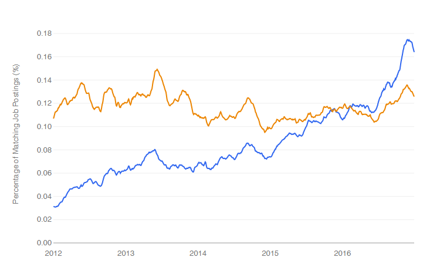
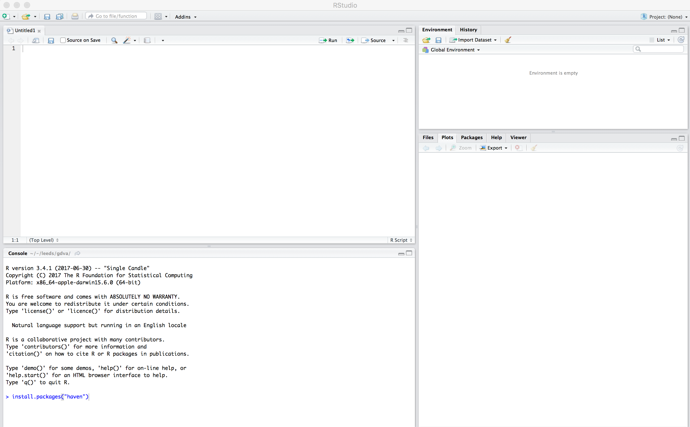
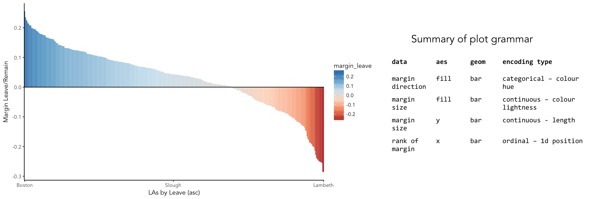
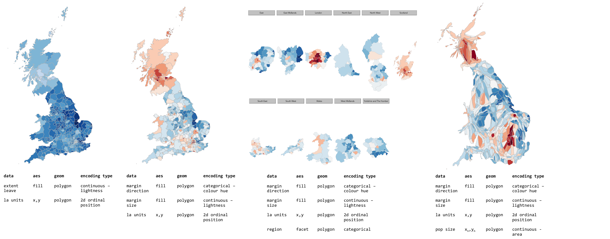

Introduction
For the next three sessions we’ll be learning about two very current technologies for doing spatial data analysis: R and Tableau. Both have origins in academia — statistics and computer science respectively — but are now global in reach and used by an increasingly impressive number of organisations.

There is not sufficient time to discuss the fundamentals of the R language in depth. Rather, these sessions aim to give you a flavour of the technologies and the most useful software and libraries for interacting with them.
What is R?
R is a free, open statistical programming language and environment. Released as open source software as part of a research project in 1995, for some time R was the preserve of academics. From 2010s onwards, with the advent of Big Data and new sub-disciplines such as Data Science, R enjoyed rapid growth and is used increasingly outside of academia, by organisations such as Google [example], Facebook [example], Twitter [example], New York Times [example] and many more.
Rather than simply a free alternative to proprietary statistical analysis software such as SPSS, R is a programming language in and of itself and can be used for:
-
Data Visualization design: PopulationLines
-
Developing interactive (visualization) software: UpSet
-
As a GIS: Geocomp with R
-
As a word processor / web publisher: R Markdown
Why R?
Free, open-source with an active community
The cost motive is obvious, but the benefits that come from being fully open-source, with a critical mass of users are many.
Firstly, there is a burgeoning array of online forums, tutorials and code examples through which to learn R. StackOverflow is a particularly useful resource for answering more individual questions.
Second, with such a large community, there are numerous expert R users who themselves contribute by developing libraries or packages that extend its use.
|
An R package is a bundle of code, data and documentation, usually hosted centrally on the CRAN (Comprehensive R Archive Network). A particularly important, though very recent, set of packages is the tidyverse: a set of libraries authored mainly by Hadley Wickham, which share a common underlying philosophy, syntax and documentation. |
R supports modern data analysis workflows
Reproducible research is the idea that data analyses, and more generally, scientific claims, are published with their data and software code so that others may verify the findings and build upon them.
Jeff Leek and Brian Caffo
In recent years there has been much introspection around how science works — around how statistical claims are made from reasoning over evidence. This came on the back of, amongst other things, a high profile paper published in Science, which found that of 100 recent peer-reviewed psychology experiments, the findings of only 39 could be replicated. The upshot is that researchers must now make every possible effort to make their work transparent. In this setting, traditional data analysis software that support point-and-click interaction is unhelpful; it would be tedious to make notes describing all interactions with, for example, SPSS. As a declarative programming language, however, it is very easy to provide such a provenance trail for your workflows in R since this necessarily exists in your analysis scripts.
Concerns around the reproducibility crisis are not simply a function of transparency in methodology and research design. Rather, they relate to a culture and incentive structure whereby scientific claims are conferred with authority when reported within the (slightly backwards) logic of Null Hypothesis Significance Testing (NHST) and p-values. This isn’t a statistics session, but for an accessible read on the phenomenon of p-hacking (with interactive graphic) see this article from the excellent FiveThirtyEight website. Again, the upshot of all this introspection is a rethinking of the way in which Statistics is taught in schools and universities, with greater emphasis on understanding through computational approaches rather than traditional equations, formulas and probability tables. Where does R fit within this? Simply put: R is far better placed than traditional software tools and point-and-click paradigms for supporting computational approaches to statistics — with a set of methods and libraries for performing simulations and permutation-based tests.
Task 1. Get familiar with the R and RStudio environment
Open RStudio

You should see a set of windows roughly similar to those in the figure above. The top left pane is the Code Editor. This is where you’ll write, organise and comment R code for execution. Code snippets can be executed using Run at the top of the RStudio pane or typing cmd R (Mac) ctr R (Windows). Below this, in the bottom left pane is the R Console, in which you write and execute commands directly. To the top right is a pane with the tabs Environment and History. The purpose of these will soon be clear. In the bottom right is a pane for navigating through project directories (Files), displaying Plots, details of installed and loaded Packages and documentation on the functions and packages you’ll use (Help).
Type some console commands
You’ll initially use R as a calculator by typing commands directly into the Console. You’ll create a variable (x) and assign it a value using the assignment operator (←), then perform some simple statistical calculations using functions that are held within the (base) package.
# Create variable and assign a value.
x <- 4
# Perform some calculations using R as a calculator.
x_2 <- x^2
# Perform some calculations using functions that form baseR.
x_root <- sqrt(x_2)|
The |
Install some packages
In these introductory sessions, you’ll mainly be using a collection of packages that form part of the so-called tidyverse. Do read some of the documentation provided from the project website to learn more around its philosophy. The packages together provide a very intuitive means of interacting with R and support analysis tasks that form most Data Science workflows.
There are two steps to making packages available in your working environment. install.packages(<package-name>) downloads the named package from a repository, library(<package-name>) makes the package available in your current session.
Read in some data
The sessions will cover a somewhat depressing, though very current, topic: the UK’s referendum vote on membership of the EU. You’ll start by exploring the results data published at Local Authority level and made available in .csv form by The Elecctoral Commission. You’ll do so using the readr package (part of the tidyverse).
# Exploratory analysis of Brexit data.
#
# Author: <your-name>
#####################################
# Load required packages.
install.packages("rmapshaper")
library(rmapshaper)
install.packages("tidyverse")
library(tidyverse)
install.packages("sf") # New SimpleFeatures package for working with spatial data.
library(sf)
install.packages("tmap") # tmap library, which uses syntax very similar to ggplot2.
library(tmap)
# Read in results data. Note that the read_csv method belongs to the readr
# package. Whilst the baseR equivalent read.csv is also fine, read_csv reads in
# data as a special class of data frame (tibble).
referendum_data <- read_csv("http://www.electoralcommission.org.uk/__data/assets/file/0014/212135/EU-referendum-result-data.csv")Notice that the results data now appears under the Data field of the Environment pane. It is stored as a data frame — a spreadsheet-like representation where rows correspond to individual observations and columns act as variables. You can inspect a data frame as you would a spreadsheet by typing View(<dataframe-name>) or by pointing and clicking on the named data frame in the Environment pane. You can also get a quick view on a data frame’s contents by typing glimpse(<dataframe-name>).
Task 2. Perform some exploratory data analysis
Do some data wrangling
Data wrangling type operations are supported by functions that form the dplyr package. Again, dplyr is within the family of packages that comprise the tidyverse. Its functions have been named with verbs that neatly describe their purpose — filter(), select(), arrange(), group_by(), summarise() and more. The pipe (%>%) is a particularly handy operator that allows calls to these functions to be chained together.
# Calculate the LA share of Leave vote by Region.
region_summary <- referendum_data %>%
group_by(Region) %>%
summarise(share_leave=sum(Leave)/sum(Valid_Votes)) %>%
arrange(desc(share_leave))
print(region_summary)Create some summary graphics

ggplot2 is a powerful and widely used package for producing statistical graphics — and again a package that is core to the tidyverse. It has a very strong theoretical underpinning, based on a framework for data visualization known as The Grammar of Graphics (Wilkinson 2005). The general approach is of treating graphical elements separately and building features in a series of layers.
# Code for creating additional variables (from the individual coding task).
referendum_data <- referendum_data %>%
mutate(share_leave=Leave/Valid_Votes,
margin_leave=share_leave-0.5 )
# Create ordered bar chart of result ordered by LA.
referendum_data %>%
filter(Area!="Gibraltar") %>%
ggplot(aes(x=reorder(Area,-share_leave), y=margin_leave, fill=margin_leave))+
geom_bar(stat="identity", width=1)+
scale_fill_distiller(palette = 5, type="div", direction=1, guide="colourbar", limits=c(-0.3,0.3))+
scale_x_discrete(breaks=c("Lambeth","Slough","Boston")) +
geom_hline(aes(yintercept=0))+
theme_classic()+
xlab("LAs by Leave (asc)")+
ylab("Margin Leave/Remain")# Code for simple bar chart of regional summary data.
region_summary %>%
ggplot(aes(x=Region, y=share_leave))+
geom_bar(stat="identity")|
It is completely understandable if at this point you think somewhat tedious the whole idea of generating code to describe your graphics. However, once you learn how to construct graphics in this way — once you learn the |
Task 3. Perform some exploratory spatial data analysis
Load in some spatial (and other attribute) data
# A pre-prepared R script that loads spatial and 2011 Census data that we'll use
# for the remaining sessions.
source("http://homepages.see.leeds.ac.uk/~georjb/ppd/r/src/load_data.R")|
The data frame we’ve called |
Explore spatial variation in the Leave:Remain vote
In this section, you will analyse variation in EU referendum voting behaviour by Local Authority by generating various Choropleth maps. You will do so using the tmap package: a new, user-friendly library that adopts a syntax very similar to that of ggplot2.
The general form of a tmap specification:
-
A data frame containing a geometry field
(sfc_MULTIPOLYGON)must be supplied totm_shape(). -
To
tm_fill(), we identify the variable values on which polygons should be coloured as well as information such as the colour mapping (sequential, diverging or continuous) and palette to use. -
tm_layout()provides control over titles, legends etc.
# Generate a choropleth displaying share of leave vote by Local Authority area.
tm_shape(data_gb) +
tm_fill(col="share_leave", style="cont", size=0.2, id="geo_label", palette="Blues", title="") +
tm_borders(col="#bdbdbd", lwd=0.5) +
tm_layout(
title="LA share of Leave vote",
title.snap.to.legend=TRUE,
title.size=0.8,
legend.text.size=0.6,
title.position = c("right", "center"),
legend.position = c("right","center"),
frame=FALSE,
legend.outside=TRUE)# Install cartogram package.
install.packages("cartogram")
library(cartogram)
# Convert from sf to sp format (supported by cartogram).
sp_gb <- as(data_gb, 'Spatial')
# Construct a new data frame, using the cartogram() function, passing as a
# parameter into the function the variable to which polygons are to be sized:
# Electorate (number of voters in LA). This may take a while.
sp_gb <- cartogram(sp_gb, "Electorate", itermax=10)
# Generate a choropleth using the same specification used in the conventional map,
# but supplying the cartogram SpatialDataFrame to tm_shape:
# e.g. tm_shape(sp_gb) +
# etc.
|
A cool feature of the |
Task 4. Data challenge
Despite seeing various iterations of these maps in the weeks after the referendum, the very obvious contrast between most of England & Wales (Leave) and Scotland and London, as well as certain university cities and towns (Remain), is surprising. Notice the spot of dark red in the East of England representing Cambridge.
Task 5. Coding exercises (optional)
Once you have finished exploring spatial structure in these demographics, try to develop your R skills by performing the coding operations listed below.
Further reading
There is a burgeoning set of books, tutorials and blogs introducing R as an environment for applied data analysis. Detailed below are resources that are particularly relevant to the material and discussion introduced in this session.
R for data analysis
-
Wickham, H. & Grolemund, G. (2017), R for Data Science, O’Reilly. The primer for doing data analysis with R. Hadley presents his thesis of the data science workflow and illustrates how R and packages that form the Tidyverse support this. It is both accessible and coherent and is highly recommended.
-
Lovelace, R., Nowosad, J. & Muenchow, J. (in preparation) Geocomputation with R, CRC Press. Currently under development but written by Robin Lovelace (University of Leeds) and others, this book comprehensively introduces spatial data handling in R. It is a great complement to R for Data Science in that it draws on brand new libraries that support Tidyverse-style operations on spatial data.
-
Healey, K. (in preparation), Data Visualization for Social Science: A practical introduction with R and ggplot2. This is a new resource, still under development. From what I’ve seen, it’s an engaging read that manages to integrate key Information Visualization theory and using real social science datasets.
-
Kay, M. & Heer, J. (2016) Analysis code for "Beyond Weber’s Law: A Second Look at Ranking Visualizations of Correlation". Reading others' data analysis using R is often instructive. Matt Kay, who has research interests in usable statistics and the reproducibility crisis, routinely publishes full data analysis code and documentation for his research papers.
New Statistics and the reproducibility crisis (non-essential)
-
Aschwanden, C. & King, R. (2015) Science Isn’t Broken: It’s just a hell of a lot harder than we give it credit for. A lovely take on the reproducibility crisis, published on FiveThirtyEight with an excellent interactive graphic.
-
Cumming, G. (2013) The New Statistics: Why and How. Geoff Cumming exposes common misconceptions associated with NHST and makes a case for a New Statistics, centred on estimation-based approaches. Despite the pre-historic graphics, his dance of the p-values video is well worth a watch.